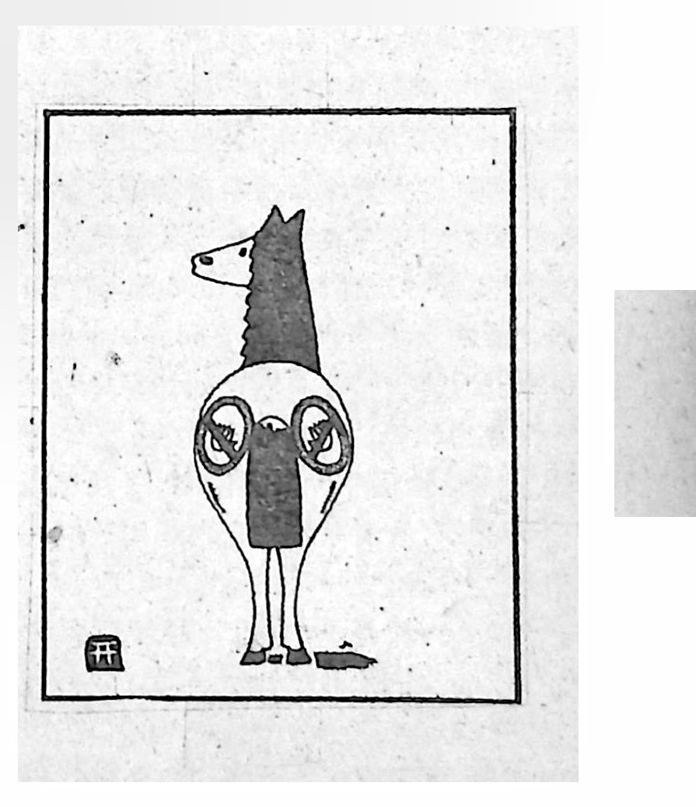

佚名 《人事》1990年第4期（总第55期），第27页
告诫
A Warning
- Description
- A single animal in a frame, seen from behind with its head turned to the left: pale pointed snout, pointed ears, a dark mane, and a round pale body. On its rump, either side of a dark tail, are two round prohibition signs, each a hand struck through: hands off.
- Note
- Printed at the end of an article on clean-government work in Jinzhong. The hands-off signs on the rump may allude to the saying 老虎屁股摸不得 (“no one may touch the tiger's backside”), said of officials who will not tolerate criticism, though the animal is not clearly a tiger. The earlier reading as a wolf in sheep's clothing took these signs for ram's horns. Neither reading is stated on the page.
- Artist
- Unattributed 佚名
- Published in
- 《人事》1990年第4期（总第55期）, p. 27
- Themes
- Bureaucratism

Cite
Unattributed, “告诫” [A Warning], Renshi (Personnel) 《人事》, 1990, no. 4, p. 27.